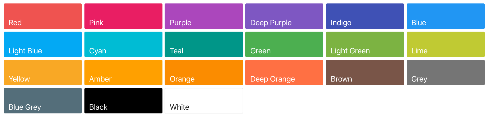

4.配置 YAML 文件
项目信息¶
- site_name
这是必要的设置，并且应该是一个字符串，用作项目文档的主要标题。例如：
site_name: My Docs
渲染主题时，此设置将作为site_name上下文变量传递。
- site_url
设置网站的URL地址。例如：
site_url: https://xxxx.github.io
默认值：null
- site_description
设置站点说明，这会将meta标签添加到生成的HTML标头中。
默认值：null
- site_author
设置作者的姓名，这会将meta标签添加到生成的HTML标头中。
默认值：null
- repo_name
存储库名称，设置后在每个页面上提供指向您的存储库的链接的名称。
默认值：'GitHub'，'Bitbucket'或者'GitLab'如果repo_url匹配这些域，则为的主机名repo_url。
- repo_url
存储库地址，设置后在每个页面上提供指向您的存储库（GitHub，Bitbucket，GitLab等）的链接。例如:
repo_url: https://github.com/example/repository/
默认值：null
- edit_uri
在线编辑路径，设置后，直接提供一个链接到源存储库中的页面。这使查找和编辑页面源变得更加容易。如果repo_url未设置，则忽略此选项。
注意
对于GitHub或GitLab托管的存储库，edit_uri 将自动设置为edit/master/docs/（请注意edit路径和master分支）。
对于由Bitbucket托管的存储库，等效项edit_uri将自动设置为src/default/docs/（请注意src路径和default 分支）。
要使用与默认值不同的URI（例如，不同的分支），只需将设置edit_uri为所需的字符串。如果您不希望在页面上显示任何“编辑URL链接”，请设置edit_uri为空字符串以禁用自动设置。
注意
在GitHub和GitLab上，默认的“编辑”路径（edit/master/docs/）在在线编辑器中打开页面。此功能要求用户拥有并登录到GitHub / GitLab帐户。否则，用户将被重定向到登录/注册页面。或者，使用“ blob”路径（blob/master/docs/）打开一个只读视图，该视图支持匿名访问。
默认值：edit/master/docs/用于GitHub和GitLab存储库或 src/default/docs/Bitbucket存储库（如果repo_url与这些域匹配），否则null
- docs_dir
包含文档源markdown文件的目录。它可以是相对目录，在这种情况下，它是相对于包含您的配置文件的目录来解析的，或者可以是从本地文件系统根目录开始的绝对目录路径。
默认值：'docs'
- copyright
设置要通过主题包含在文档中的版权信息。例如：
copyright: "Copyright © 2019 - 2020 xxxx"
默认值：null
页面风格¶
启用 material 主题¶
theme:
name: 'material'
配色¶
在Google的Material Design 调色板上，为每种主题色和强调色定义了默认色相，这使更改主题的整体外观非常容易。只需使用以下变量设置原色和强调色：
theme:
palette:
primary: 'indigo'
accent: 'indigo'
颜色名称不区分大小写，但必须与“材料设计”调色板的名称匹配。有效值是：red，pink，purple，deep purple，indigo，blue，light blue，cyan，teal，green，light green，lime，yellow，amber，orange，deep orange，brown，grey，blue grey和 white。后四种颜色只能用作主题色。
主题色

强调色

网页Logo¶
Logo 应为矩形，最小分辨率为128x128，留出一定的边缘空间，并在透明地面上由高对比度区域组成，因为它将放置在彩色标题栏。只需创建文件夹docs/images，添加Logo并将其嵌入：
theme:
logo: 'images/logo.svg'
默认值： school
此外，可以通过从Material Design图标字体中设置任意连字（或Unicode代码点）来更改默认图标，例如:
theme:
logo:
icon: 'cloud'
网站图标¶
可以通过将favicon变量设置为.ico或图像文件来更改默认图标。
theme:
favicon: 'assets/images/favicon.ico'
默认值：assets/images/favicon.png
文本风格¶
语言¶
通过以下方式指定语言：
theme:
language: 'en'
material for mkdocs 支持国际化（i18n），并提供以下语言的所有模板变量和标签的翻译：
| Available languages | ||
|---|---|---|
af / Afrikaans |
ar / Arabic |
ca / Catalan |
cs / Czech |
et / Estonian |
de / German |
hr / Croatian |
ja / Japanese |
ro / Romanian |
da / Danish |
nl / Dutch |
en / English |
fi / Finnish |
fr / French |
gl / Galician |
gr / Greek |
he / Hebrew |
hi / Hindi |
hu / Hungarian |
id / Indonesian |
it / Italian |
kr / Korean |
no / Norwegian |
nn / Norwegian |
fa / Persian |
pl / Polish |
pt / Portugese |
ru / Russian |
sr / Serbian |
sh / Serbo-Croatian |
sk / Slovak |
th / Thai |
vi / Vietnamese |
si / Slovenian |
es / Spanish |
sv / Swedish |
tr / Turkish |
uk / Ukrainian |
zh / Chinese (Simplified) |
zh-TW / Chinese (Taiwanese) |
zh-Hant / Chinese (Traditional) |
字体¶
默认情况下，主题包含Roboto字体系列，尤其是文本的常规 sans-serif 类型和monospaced代码的类型。两种字体均从Google字体加载，并且可以更改为其他字体，例如Ubuntu字体家族：
theme:
font:
text: 'Ubuntu'
code: 'Ubuntu Mono'
文本字体将以权重400和700加载，monospaced字体以常规权重加载。如果您想从其他目标加载字体，或者不想使用Google字体加载，只需将其设置font为false：
theme:
font: false
默认值：Roboto和Roboto Mono
文本方向¶
material 同时支持从左到右（ltr）和从右到左（rtl）文本方向。这使更多语言（例如阿拉伯语，希伯来语，叙利亚语和其他语言）可以与主题一起使用：
theme:
direction: 'rtl'
默认值：与给定主题语言的最佳匹配，自动设置
标签¶
默认情况下，整个导航在左侧使用可折叠部分呈现，因为水平导航在较小的屏幕上经常会出现问题。但是，对于大型文档项目，有时需要添加另一个导航层来分隔顶层部分。material 通过 tabs 功能实现了这一点，可以通过将相应功能标记设置为来启用true：
theme:
feature:
tabs: true
默认值：fasle
注意
启用标签页后，顶层区域*将在标题正下方的附加层中呈现。左侧的导航将仅包含所选部分中包含的页面。此外，在项目的内部定义的*顶级页面mkdocs.yml将被分组在第一个选项卡下，该选项卡将接收第一页的标题。
导航栏¶
用于确定站点的全局导航的格式和布局。最简单的导航配置如下所示：
nav:
- 'index.md'
- 'about.md'
注意
导航配置中的所有路径都必须相对于docs_dir 配置选项。如果该选项设置为默认值，docs则上述配置的源文件将位于docs/index.md和 docs/about.md。
上面的示例将导致在顶层创建两个导航项，并根据Markdown文件的内容（如果在文件中未定义标题的话）从文件名推断其标题。要覆盖nav设置中的标题，请在文件名之前添加一个标题：
nav:
- Home: 'index.md'
- About: 'about.md'
注意
如果在导航中为页面定义了标题，则该标题将在该页面的整个站点中使用，并将覆盖页面本身内定义的任何标题。
可以通过在部分标题下列出相关页面来创建导航子部分。例如：
nav:
- Home: 'index.md'
- User Guide:
- 'Writing your docs': 'writing-your-docs.md'
- 'Styling your docs': 'styling-your-docs.md'
- About:
- 'License': 'license.md'
- 'Release Notes': 'release-notes.md'
通过上述配置，我们具有三个顶级项：“主页”，“用户指南”和“关于”。“首页”是指向该网站首页的链接。在“用户指南”部分下，列出了两个页面：“编写文档”和“样式化文档”。在“关于”部分下，又列出了两个页面：“许可证”和“发行说明”。
扩展功能¶
网站搜索¶
网站搜索是使用lunr.js实现的，该默认情况下包括英语的单词，而其他语言的词干包含在lunr-languages中，这两种语言都与此主题集成在一起。素材为给定的主题语言选择匹配的（或最匹配的）词干。mkdocs.yml通过显式定义搜索语言，可以在项目的语言中激活多语言搜索：
extra:
search:
language: 'en, de, ru'
网站搜索目前支持以下语言：
| Available language | |||
|---|---|---|---|
da / Danish |
du / Dutch |
en / English |
fi / Finnish |
fr / French |
de / German |
hu / Hungarian |
it / Italian |
ja / Japanese |
no / Norwegian |
pt / Portugese |
ro / Romanian |
ru / Russian |
es / Spanish |
sv / Swedish |
tr / Turkish |
可以对词的分隔符进行自定义，这可以索引由-或分隔的单词部分.：
extra:
search:
tokenizer: '[\s\-\.]+'
注意
目前，Lunr语言不支持中文或其他亚洲语言。但是，实践证明，可使用日语来搜索中文。
社交关系¶
在文档的页脚中链接社交帐户。type必须表示类型，例如github，twitter或者linkedin，link必须包含要链接的网址，例如：
extra:
social:
- type: 'github'
link: 'https://github.com/xxxx'
- type: 'twitter'
link: 'https://twitter.com/xxxx'
- type: 'linkedin'
link: 'https://www.linkedin.com/in/xxxx'
谷歌分析¶
设置Google Analytics（分析）跟踪配置。MkDocs可轻松将网站跟踪与Google Analytics（分析）集成。除了基本跟踪之外，还可以跟踪所有传出链接的点击以及网站搜索的使用方式。可以在项目的中激活跟踪：
google_analytics:
- 'UA-XXXXXXXX-X'
- 'auto'
评论插件¶
material 已与Disqus 集成在一起，因此，如果要在文档中添加注释部分，只需设置你在 Disqus 里的简称：
extra:
disqus: 'your-shortname'
注意
除了索引页面之外，所有页面上都会插入注释部分。此外，将在目录底部生成一个新条目，该条目链接到注释部分。
前提
site_url必须设置值，以使Disqus集成正确加载。
也可以使用在 markdown_extensions 安装 meta 为特定页面启用或禁用 Disqus (下述)。
Markdown扩展¶
MkDocs页面必须使用Markdown写作，Markdown是一种轻量级的标记语言，它导致易于阅读，易于编写的纯文本文档，并且可以以可预测的方式转换为有效的HTML文档。
MkDocs使用Python-Markdown库将Markdown文档呈现为HTML。除了在所有Markdown实现中通用的 基本Markdown语法，MkDocs还支持通过 Python-Markdown扩展 语法。建议默认启用以下扩展：
markdown_extensions:
- admonition # 注解块支持
- pymdownx.arithmatex # 数学公式的TeX语法支持
- pymdownx.betterem:
smart_enable: all
- pymdownx.caret
- pymdownx.critic
- pymdownx.details
- pymdownx.emoji: # 表情支持
emoji_generator: !!python/name:pymdownx.emoji.to_svg
- pymdownx.inlinehilite
- pymdownx.magiclink
- pymdownx.mark
- pymdownx.smartsymbols
- pymdownx.superfences
- pymdownx.tasklist: # 任务清单支持
custom_checkbox: true
- pymdownx.tilde
- meta # 元数据支持
- 使用 arithmatex 时，除了激活扩展之外，还需要在
mkdocs.yml中包括MathJax JavaScript：
extra_javascript:
- 'https://cdnjs.cloudflare.com/ajax/libs/mathjax/2.7.0/MathJax.js?config=TeX-MML-AM_CHTML'
- 使用 meta ，为特定页面启用或禁用 Disqus：
元数据在Markdown文档的开头以一系列键值对的形式编写，并由结束元数据上下文的空白行分隔。
# 可以在每个文档启用Disqus：
disqus: your-shortname
# 可以通过将特定页面设置为空值来禁用Disqus：
disqus:
mkdocs.yml 配置示例¶
# Project information
site_name: 基于 Material for MkDocs 搭建静态网页
site_description:
site_author: derrors
site_url: https://derrors.github.io/
# Repository
repo_name: 'Derrors/Derrors.github.io'
repo_url: 'https://github.com/Derrors/Derrors.github.io/'
# Copyright
copyright: "Copyright © 2019 - 2020 Qinghe Li"
theme:
name: material
palette:
primary: 'deep purple'
accent: 'deep purple'
feature:
tabs: true
#font:
#text: 'Ubuntu'
#code: 'Ubuntu Mono'
favicon: 'assets/images/favicon.ico'
language: 'zh'
# Customization
extra:
social:
- type: github
link: https://github.com/Derrors
search:
language: 'ja'
disqus: 'derrors'
# Extensions
markdown_extensions:
- admonition
- codehilite:
guess_lang: false
linenums: false
- toc:
permalink: true
- footnotes
- meta
- def_list
- pymdownx.arithmatex
- pymdownx.betterem:
smart_enable: all
- pymdownx.caret
- pymdownx.critic
- pymdownx.details
- pymdownx.emoji:
emoji_generator: !!python/name:pymdownx.emoji.to_png
- pymdownx.inlinehilite
- pymdownx.magiclink
- pymdownx.mark
- pymdownx.smartsymbols
- pymdownx.superfences
- pymdownx.tasklist
- pymdownx.tilde
extra_javascript:
- 'https://cdnjs.cloudflare.com/ajax/libs/mathjax/2.7.0/MathJax.js?config=TeX-MML-AM_CHTML'
# Google Analytics
google_analytics:
- "UA-156919721-1"
- "auto"
edit_uri:
plugins:
- search
nav:
- 基于 Material for MkDocs 搭建静态网页:
- 介绍: 介绍.md
- 安装 Mkdocs && Material: 安装 Mkdocs && Material.md
- 创建新项目: 创建新项目.md
- 配置 YAML 文件: 配置 YAML 文件.md
- 开发服务器并生成网页: 开发服务器并生成网页.md
- 将网页部署到 GitHub Pages: 将网页部署到 GitHub Pages.md
- Reference: Reference.md